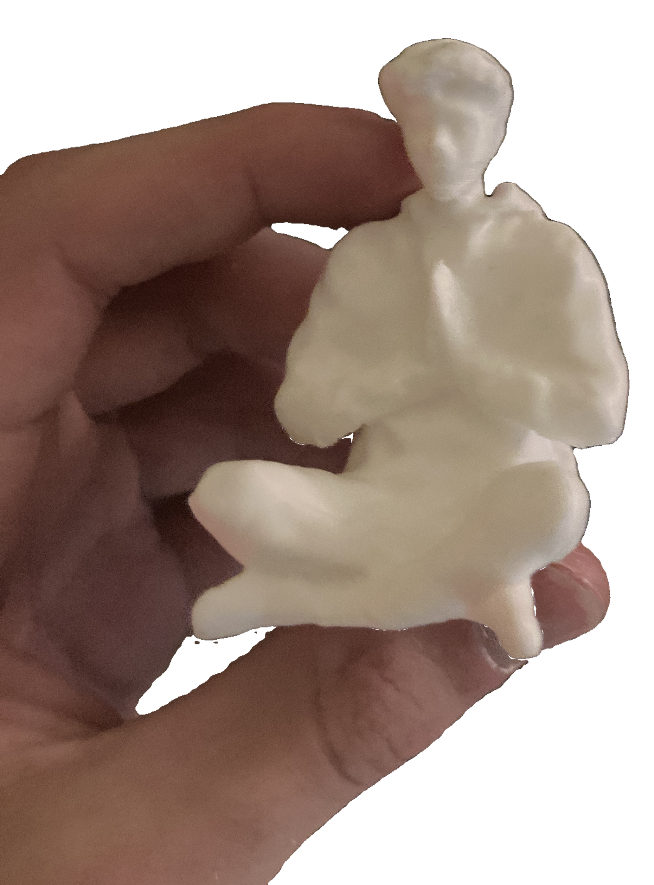
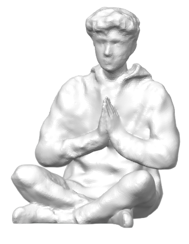
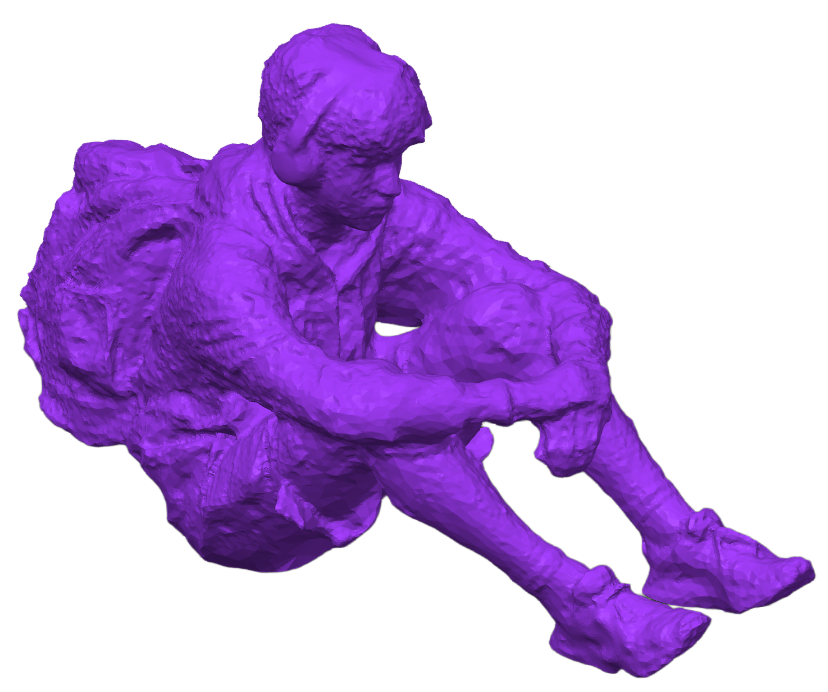
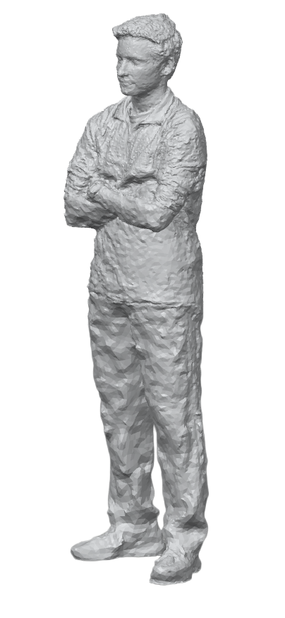
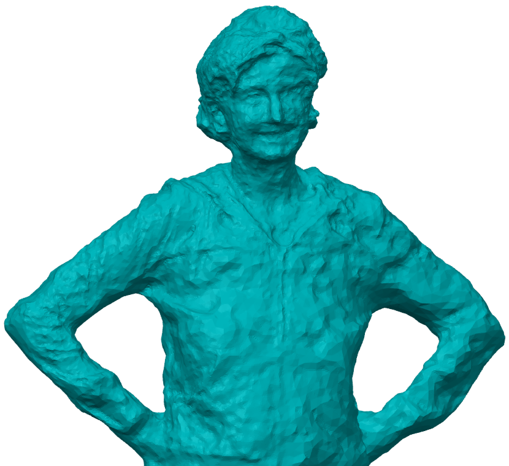
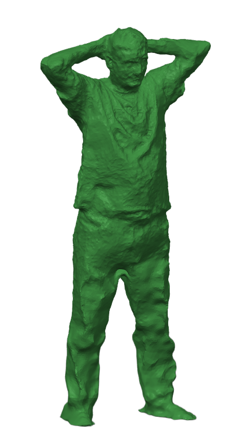
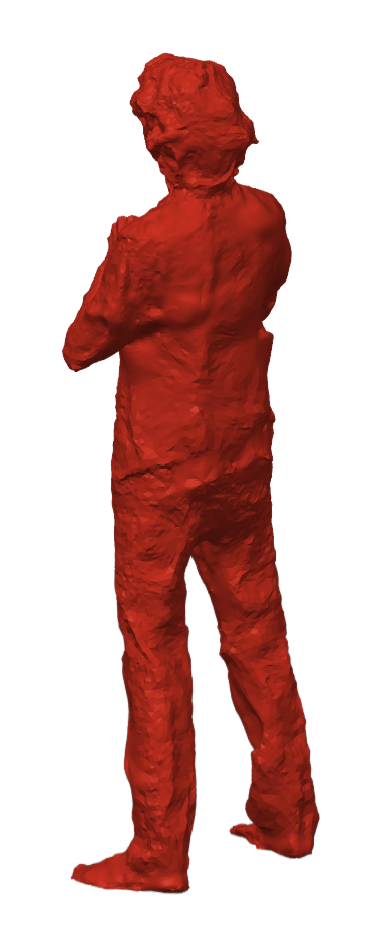

01
THE IDEA
After buying a 3D printer, I became fixated on the idea of putting a tiny model of myself on the printhead. Eventually the joke became too funny to ignore, so I learned how to scan myself using Polycam.
A joke idea that turned into a repeatable workflow for scanning people, repairing raw meshes, and turning friends and family into tiny 3D printed models.

After buying a 3D printer, I became fixated on the idea of putting a tiny model of myself on the printhead. Eventually the joke became too funny to ignore, so I learned how to scan myself using Polycam.
Polycam's free trial would give me the raw scan mesh, but not a finished STL. Rather than pay for the export, I taught myself how to repair the model manually in Meshmixer.
That meant converting the mesh into a solid body, trimming bad geometry, and correcting scan imperfections until the model was actually printable.
My first test subject was myself, and the result worked far better than I expected. After printing several versions — including the tiny model for the printer — I started scanning friends and family too.
It became a surprisingly fun skill to have, and gifting people miniature printed versions of themselves never really stopped being funny.
Capture a full-body or partial-body scan in Polycam while working around missed geometry and occlusion.
Import the raw mesh into Meshmixer, remove artifacts, trim excess geometry, and fix obvious defects.
Convert the repaired shell into a watertight solid model suitable for slicing and printing.
Scale and orient the model, then turn the digital scan into a tiny physical copy of the person.






What started as a ridiculous decoration for my 3D printer turned into my first real experience with 3D scanning and mesh repair. It also taught me that imperfect digital geometry can still become a useful physical model if you understand how to clean, simplify, and prepare it for manufacturing.